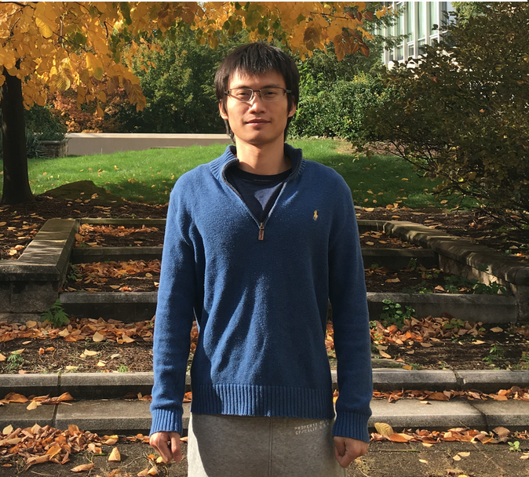

Daren Wang

I am a Postdoc Scholar at the
Statistics Department at the University of Chicago.
My supervisor is Prof. Rebecca Willett.
Previously, I completed my Ph.D. in statistics at
Carnegie Mellon University in August 2018 under the supervision of Prof.
Alessandro Rinaldo
and Prof.
Christopher Genovese.
Education
- Ph.D. in Statistics, Carnegie Mellon University (2018).
- M.S. in Mathematics, University of Michigan (2011).
- B.S. in Mathematics, University of Virginia (2010).
Research Interests
- High-dimensional inference
- Network models
- Change point detection and time series
- Functional data analysis
Publications and Preprints
-
Wang, D., Yu, Y., and Rinaldo, A. (2019+).
Optimal change point detection and localization in sparse dynamic networks.
Annals of Statistics, To appear. [pdf]
- Wang, D., Lu, X., and Rinaldo, A. (2019).
DBSCAN: Optimal rates for density based clustering.
Journal of Machine learning Research, 20.170: 1-50.
[pdf]
- Ciollaro, M.*, Genovese, C.*, and Wang, D.* (2016).
Nonparametric clustering of functional data using pseudo-densities.
Electronic Journal of Statistics, 10.2: 2922-2972.
[pdf]
(* indicates alphabetical order.)
-
Perrotti, L.*, Walkington, N.*, and Wang, D.* (2017).
Numerical approximation of viscoelastic fluids.
ESAIM: Mathematical Modeling and Numerical Analysis, 51.3: 1119-1144.
[pdf]
-
Wang, D., Yu, Y., and Rinaldo, A. (2017).
Optimal covariance change point detection in high dimensions.
Under Revision. [pdf]
-
Wang, D., Yu, Y., and Rinaldo, A. (2018).
Univariate mean change point detection: penalization, CUSUM and optimality.
Under Revision. [pdf]
-
Wang, D., Lin, K., and Willett, R. (2019).
Statistically and computationally efficient change point localization in regression settings.
Preprint. [pdf]
-
Wang, D., Yu, Y., Rinaldo, A., and Willett, R. (2019).
Localizing changes in high-dimensional vector autoregressive processes.
Preprint. [pdf]
-
Padilla, O.H.M., Yu, Y., Wang, D., and Rinaldo, A. (2019).
Optimal nonparametric change point detection and localization.
Preprint. [pdf]
-
Padilla, O.H.M., Yu, Y., Wang, D., and Rinaldo, A. (2019).
Optimal nonparametric multivariate change point detection and localization.
Preprint. [pdf]
-
Chen, Y., Wang, D., Rinaldo, A., and Wasserman, L. (2016).
Statistical analysis of persistence intensity functions.
Preprint. [pdf]